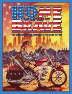

|  | Fiche technique |
| Supplément pour le jeu de rôles Cyberpunk 2020, édité par R. Talsorian Games (1993) | |
| Langue | Français |
| Thème | L'Amérique du 21ème siècle |
| Qualité du background | 4 / 5 |
| Qualité des scénarii | - |
| Qualité des règles | 3 / 5 |
| Qualité des illustrations | 3 / 5 |
| Qualité de l'écriture | 3 / 5 |
Ouf, enfin ! Tel est le cri poussé par de nombreux MJ cyberpunk quand ce supplément est sorti. Enfin un VRAI background pour Cyberpunk. Cela arrive un peu tardivement certes, mais mieux vaut tard que jamais. Alors pour ceux qui à l'inverse de moi n'ont pas perdu patience et créé un background propre, voilà de quoi faire vivre votre Amérique du 21ème siècle. Tout est détaillé : la vie, les usages, l'économie, les religions et la politique du pays (celle ci étant malheureusement un peu survolée). Chaque état est décrit individuellement. Malgré ce caractère encyclopédique, certains aspects sont à mon avis un peu regrettable : 35 pages consacrées à l'armée américaine ça fait beaucoup ! De plus, pas mal de choses sont assez irréalistes : en 30 ans, comment ont-ils fait pour créer tant de nouvelles villes, de nouvelles religions, etc ? Bon bref, il y a à mon avis à prendre et à laisser dans ce supplément, mais il est de toute manière indispensable pour un MJ désirant faire jouer aux USA.
{kind=link}